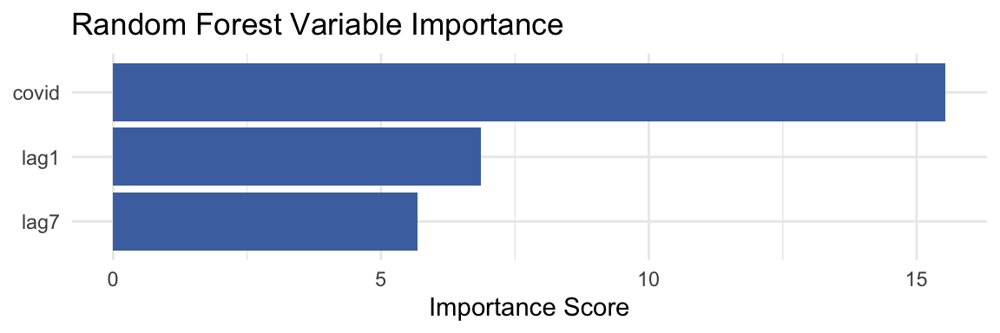
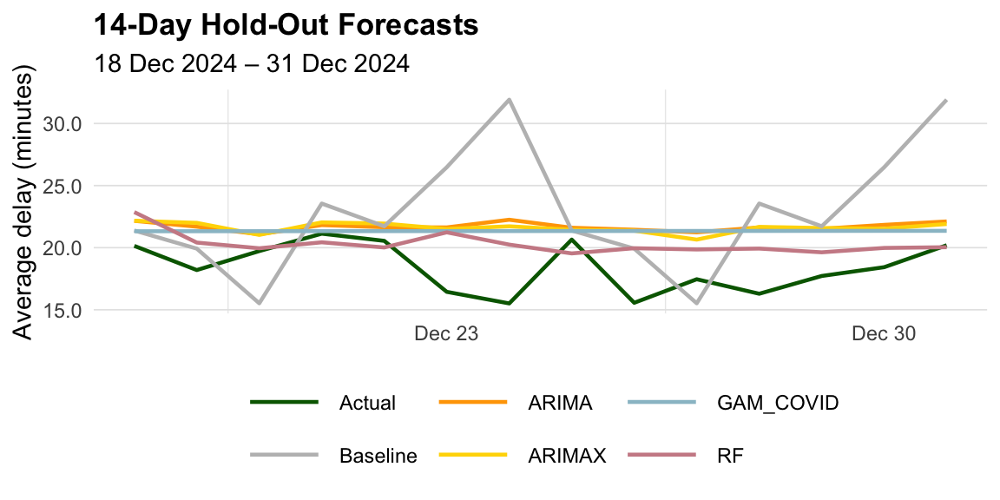

It is 7:30 in the morning, and everything depends on getting to the subway on time. You checked the schedule, left early just in case, and felt confident. But now, as you step onto the platform, the signs are blank, the train is missing, and the crowd is growing. For many in Toronto, this is a familiar scene. Transit delays are part of daily life. They cause lateness, missed appointments, and rising stress. Over time, they weaken trust in the system and disrupt the flow of the entire city.
The Toronto Transit Commission runs a complex network of subways, buses, and streetcars. Delays affect not just individual commuters but also the wider economy and city life. Better delay prediction can help TTC make smarter decisions about planning, staffing, and live updates. It also helps riders travel with more certainty. More broadly, accurate forecasts benefit businesses, reduce traffic pressure, and support a more efficient and resilient city.
This study asks whether these delays can be predicted more accurately by using past delay patterns and signals from major external events. The goal is to understand if yesterday’s or last week’s delays can help forecast today’s, and whether including a flag for major disruptions, such as the COVID-19 stay-at-home period, improves those predictions.
Although COVID-19 is used in this study, it serves as an example rather than the main focus. Major events like pandemics, severe weather, labor strikes, or infrastructure failures can all affect transit patterns. By using COVID as a case, this research explores whether models can recognize and adapt to these kinds of disruptions.
The data used come from the TTC Open Data Portal, which provides public access to transit delay records across subways, buses, and streetcars. Covering the years 2014 to 2024, the dataset includes over 400,000 delay events. To study the research questions, three types of models are applied: an Autoregressive Integrated Moving Average model with external variables, a Generalized Additive Model, and a Random Forest model. Some models use only recent delay history, while others include a simple signal to represent the impact of major disruptions. These approaches help reveal whether daily transit delays follow regular patterns or are strongly shaped by external events.
The data used in this study came from the Toronto Transit Commission delay records available through the Toronto Open Data Portal. These records cover transit delays from subway, streetcar, and bus services in Toronto between 2014 and 2024. Subway and streetcar delay data were downloaded directly from the online portal, while bus delay information and a subway delay reference guide were downloaded separately as spreadsheet files. The original data are freely accessible online through the Toronto Open Data website.
Before analysis, the data required cleaning and standardization.
Originally, each delay was recorded with separate date and time fields.
These fields were combined into one single timestamp called
DateTime. This timestamp was initially in Coordinated
Universal Time (UTC) but was converted to the local Toronto time zone
(Eastern Standard Time). Delay durations, which were recorded
differently across datasets, were combined into one standardized
variable named min_delay, measured in minutes. Delay
incidents, initially recorded with numeric codes in subway data, were
replaced with clear descriptions using the subway delay reference guide.
Finally, any records with missing or invalid information (such as
negative delays) were removed. After cleaning, the final dataset
contained 400,845 delay events: 207,014 from buses, 139,007 from
streetcars, and 54,824 from subways.The cleaned data can be found in the
data folder, or retrieved using the script in the data folder.
This report used a cleaned csv file, but all results can be fully reproduced using the raw TTC delay data available online. The data/ folder contains the exact scripts used for data acquisition and cleaning in order to get the cleaned csv file.
This study aims to predict the average daily delay across Toronto’s transit network. To calculate this, all delays for each day were summed and then divided by the number of delay events that day. Predictions used two kinds of information. First, historical delays from the day before (“lag-1”) and from exactly one week ago (“lag-7”) were included. These lagged delays help models understand if delays today might be similar to recent delays or follow a weekly pattern. Second, an indicator was used to mark a significant external event: the COVID-19 pandemic period. Days during the major COVID-19 stay-at-home orders (March 1, 2020, to June 30, 2022) were labeled “1”, and all other days were labeled “0”. This helps the models learn if delays were different during COVID compared to normal times. To fairly test the models, the last 14 days of data were reserved for evaluation, and all earlier data were used for training. The seed was set to 370 for reproducibility.
A simple baseline forecast, seasonal naive, was first computed. This basic method assumes the delay today will be exactly the same as the delay from exactly one week ago. Mathematically, it is: \(\widehat{y}_{t+h} = y_{t+h-7}\). Here, \(\widehat{y}_{t+h}\) represents the forecasted delay \(h\) days from today. This simple method provides a basic standard that more advanced models should aim to outperform.
The first advanced model tested was an ARIMAX model. ARIMAX predicts future delays by analyzing past delays and external events. It finds patterns from past delays—daily and weekly—and checks whether delays changed significantly during the COVID-19 period. The ARIMAX model is expressed as:
\[ \text{Delay today} = (\text{Patterns from past delays}) + (\text{Effect of COVID event}) + (\text{Random error}) \]
This model calculates coefficients that measure how past delays and the COVID period impact today’s delays. A positive COVID coefficient means delays were higher during COVID, and a negative one means delays were lower. The best version of this model was chosen automatically using AICc, which balances accuracy and simplicity.
To judge whether the pandemic indicator really helps, a second model was fit that is identical in every way except it ignores the COVID flag. In other words, the forecast is driven only by the series’ own history; no outside information is supplied. This plain ARTIMA model is written
\[ \text{Delay today} = (\text{Patterns from past delays}) + (\text{Random error}) \]
Next, a Generalized Additive Model was used. The GAM allows the delay trend over time to be smooth and flexible, not necessarily following straight lines. It helps identify if delays gradually increase or decrease over certain periods and also examines how delays differed before, during, and after COVID-19. The GAM model is written as:
\[ \text{Delay} = (\text{Average delay}) + (\text{Smooth trend over time}) + (\text{COVID period effect}) + (\text{Random error}) \]
The “smooth trend” is created using spline, which smoothly curves to fit data without sudden jumps. GAM provides a measure called “degrees of freedom,” which indicates how flexible or complex the curve is. Higher values mean the model found more complex patterns. COVID-period coefficients show whether delays during and after COVID differed significantly from normal times.
A Random Forest model was also used to predict average daily transit delays. Random Forest is an ensemble learning method that builds many individual regression trees and then averages their predictions. Each regression tree is a simple model that tries to predict today’s average delay based on a few input features: the delay from yesterday (lag1), the delay from exactly one week ago (lag7), and an indicator for whether the date falls during the COVID-19 period.
In a single tree, the data are repeatedly split into groups based on the predictor variables. At each split, the goal is to divide the data into two parts so that the delay values within each part are as similar as possible. This splitting continues until a stopping rule is met, such as reaching a minimum number of observations in a group. Each final group predicts a single value, which is usually the average delay of the points in that group. The Random Forest grows many of these trees, each on a different random sample of the training data. It also randomly selects a subset of predictors at each split to create diverse trees. The final forecast is simply the average of the predictions from all the trees. The idea behind the Random Forest model can be written as:
\[ \text{Delay today} = \frac{1}{T} \sum_{t=1}^T \text{Tree}_t(\text{lag1}, \text{lag7}, \text{COVID}) \]
where \(T\) is the total number of trees, and \(\text{Tree}_t(\cdot)\) is the prediction made by the \(t\)-th regression tree using the given predictors.
To compare the performance of these models, three different evaluation metrics were used: Root Mean Squared Error (RMSE), Mean Absolute Error (MAE), and Mean Absolute Scaled Error (MASE). RMSE measures the average size of the prediction errors, giving extra weight to large errors. MAE measures the simple average size of errors, making it easy to interpret. MASE compares the forecast errors from the models to the seasonal naive baseline method; a MASE value below 1 means the model performed better than the simple naive forecast. By comparing these metrics, it becomes possible to determine whether routine delay patterns alone or significant external events (such as the COVID-19 pandemic) provide more valuable information when predicting daily transit delays.
The seasonal-naive benchmark assumes that the delay for any given day will be identical to the delay recorded exactly one week earlier. When this very simple rule was applied to the fourteen-day hold-out it produced a root-mean-square error of about 7.04 minutes and a mean-absolute error of roughly 5.38 minutes, so the typical forecast missed the true value by just over five minutes. These numbers establish a baseline that the more sophisticated methods are expected to beat.
The ARIMA model without the COVID flag estimates the daily-delay series as
\[ (1 - 0.44\,B)\,(1-B)\,y_t \;=\; (1 - 1.35\,B + 0.36\,B^{2})\, (1 - 0.07\,B^{7} - 0.06\,B^{14})\,\varepsilon_t, \]
where \(B\) is the one–day back-shift operator, \(y_t\) is the average delay on day \(t\) and \(\varepsilon_t\) is random noise.All numeric coefficients represent the trend. More specifically, \(0.44\) says today’s deviations depend moderately on yesterday’s. The two terms \(-1.35\) and \(0.36\) summaries short bursts of shocks. The terms \(-0.07\) and \(-0.06\) capturs the TTC’s regular seven-day rhythm. With these terms the model achieves a hold-out RMSE of 3.78 minutes and a MASE of 0.64, already much better than the simple seasonal-naive benchmark.
The ARIMAX model with a COVID indicator keeps exactly the same lag structure but adds a regression term for COVID, where \(x_t\) equals 1 on days between 1 March 2020 and 30 June 2022 and 0 otherwise:
\[ (1 - 0.75\,B)\,(1-B)\,y_t \;=\; (1 - 1.68\,B + 0.68\,B^{2})\, (1 - 0.58\,B^{7})\,\varepsilon_t \;-\;1.62\,x_t , \]
The negative coefficient \(-1.62\) means that, holding all routine patterns fixed, the pandemic period lowers the expected daily delay by about 1.6 minutes. None of the other numbers change significantly, which implies the week-to-week trend of the series remains intact; only the level shifts downward when \(x_t=1\). Adding this single term trims the hold-out RMSE to 3.67 minutes and the MASE to 0.62, a modest two-percent improvement.
Because both models share the same lag structure, their difference isolates the effect of the COVID indicator. The small reduction in forecasting error together with the unchanged AR and MA coefficients supports the idea that COVID did not alter how delays evolve from day to day or week to week; it simply moved the whole curve slightly lower. Thus the long-run trend and seasonal pattern stayed the same, but the pandemic introduced a temporary level drop of roughly one and a half minutes in average daily delay.
The generalized additive model represents the daily delay as a smooth curve of calendar time plus fixed adjustments for the three pandemic phases. In equation form the fitted model is
\[ \hat y_i = 15.52 + f(\text{date}_i) - 1.80\,\mathbf 1_{\text{COVID}} - 1.60\,\mathbf 1_{\text{post}} , \]
where \(f(\cdot)\) is a cyclic cubic spline with about 8.7 effective degrees of freedom. The spline captures gradual rises and falls that repeat each year, while the two negative coefficients show that the average delay dropped by roughly 1.8 minutes during the strict stay-home interval and by about 1.6 minutes in the months that followed. Because the same smooth curve is applied to all three phases, these results indicate that the overall trend shape stayed intact and only its height shifted downward while travel volumes were lower. Forecast accuracy improved further, with an RMSE of 3.49 minutes, an MAE of 2.91 minutes and a MASE of 0.57.
This model achieved the best performance out of all methods tested, with a RMSE of 2.73 minutes, a MA of 2.22 minutes, and a MAS of 0.43 on the 14-day hold-out period. These results show that the Random Forest provided highly accurate predictions, with errors noticeably smaller than the baseline and the other models.
A variable importance analysis was also performed to understand which predictors contributed the most to the Random Forest’s accuracy. The results are shown in the bar plot below. The plot displays the importance scores for each variable, where a higher score means the variable played a bigger role in making accurate predictions. The COVID-19 indicator was the most important predictor with a score around 15.5, showing that the pandemic had a strong influence on delays even after controlling for historical patterns. The previous day’s delay (lag1) had an importance score around 6.9, and the delay from one week ago (lag7) had a score around 5.7. This means that while short-term and weekly history were important, the COVID period itself had a noticeable and lasting effect on daily delays.

Taken together, these results paint a consistent picture. Every modelling framework finds that the weekly rhythm and short-term momentum of delays persisted through the pandemic, but the overall level of those delays moved lower by roughly one-and-a-half to two minutes while stay-home orders were in place. Including a simple binary flag for that event therefore improves forecasts without needing to alter the lag structure or the long-run trend shape. The hypothesis that exceptional events enhance predictive accuracy is supported, yet the evidence also shows that the dominant signal still comes from routine daily and weekly patterns.
The chart compares each model’s forecasts with the actual delays over the last two weeks. The green line is the real data. The grey baseline line, which simply repeats last week’s value, often sits well above the true delays, especially on the sharp dips. The two orange lines—plain ARIMA and ARIMAX—follow almost the same smooth path; they are closer to reality than the baseline but still miss the sudden drops. The blue GAM curve stays almost flat, matching the overall level yet overlooking the daily swings. The red Random Forest track stays nearest to the green line, moving up and down at the right moments and therefore gives the most accurate day-by-day predictions.

The table shows how well each model forecasts the next 14 days using three error scores: RMSE, MAE and MASE. Smaller numbers mean better accuracy. The baseline that simply repeats last week’s delay is the weakest, missing by about 7 minutes on RMSE and 5.4 minutes on MAE, which sets MASE near 1.05. Adding an ARIMA structure that learns recent patterns cuts those errors by more than half, and including the COVID flag in ARIMAX trims them a little more. The GAM, which fits a smooth calendar curve plus COVID shifts, lowers RMSE to about 3.5 minutes. The random forest, which combines yesterday’s delay, the delay a week ago and the COVID flag across many decision trees, is the most accurate. Overall, every model that blends recent history with the pandemic indicator beats the weekly-repeat baseline, and the nonlinear random forest delivers the biggest improvement.
| Model | RMSE | MAE | MASE |
|---|---|---|---|
| Baseline | 7.04 | 5.38 | 1.05 |
| ARIMA | 3.78 | 3.26 | 0.64 |
| ARIMAX | 3.67 | 3.18 | 0.62 |
| GAM-COVID | 3.49 | 2.91 | 0.57 |
| RF | 2.73 | 2.22 | 0.43 |
Transit delays affect more than just people trying to get to work or school. They shape how smoothly a city runs. This study shows that many of these delays follow regular patterns. Delays from the day before or the same day last week can help predict what will happen today. These patterns make it possible to build models that give useful forecasts.
The study also finds that adding a simple signal for major events, like the COVID-19 pandemic, can make predictions better. These events do not change how delays behave from day to day, but they can shift the overall level of delays. During the COVID stay-at-home period, for example, the average delay dropped. This shows that outside events, even if rare, can have a strong effect.
These findings matter because cities need to plan for both normal days and times of disruption. If transit systems can see when delays are likely to happen, they can respond faster. This helps with staffing, service planning, and letting riders know what to expect. When transit is more reliable, people trust it more and are more likely to use it.
There are also limits to what this study shows. The models used here only looked at past delays and one simple event flag. They did not include other factors like weather, traffic, or how many people were riding each day. These might also affect delays and could be useful in future studies. The models also do not explain why a disruption happened or how long its effects lasted.
Future work could use more detailed data and test new kinds of models. It could also explore how to use delay forecasts in real time to support decisions made by transit staff. These tools could help make public transportation more reliable not just in Toronto, but in other cities too.
Copyright © 2025. Jenny Zhu.